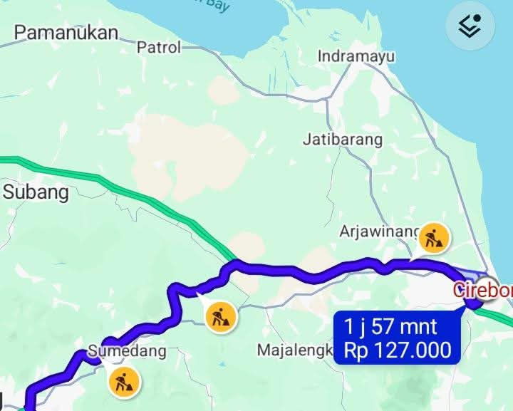

Ekspedisi Express Bandung Cirebon Tarif Murah, Bagaimana Cara Kirim Paket dengan Cepat dan Hemat?

Sedang mencari ekspedisi express Bandung Cirebon dengan tarif murah? Kebutuhan pengiriman barang dari Bandung menuju Cirebon cukup beragam, mulai dari paket toko online, dokumen penting, pakaian, perlengkapan usaha, hingga barang kebutuhan pribadi.
Bagi pelaku bisnis, kecepatan pengiriman dapat memengaruhi kepuasan pelanggan. Sementara itu, bagi pengirim pribadi, biaya ongkir yang terjangkau tentu menjadi salah satu pertimbangan utama.
Karena itu, memilih jasa ekspedisi sebaiknya tidak hanya melihat harga, tetapi juga jenis layanan, estimasi pengiriman, keamanan barang, dan kemudahan pelacakan paket.
Berikut beberapa pertanyaan yang sering muncul ketika seseorang ingin mengirim paket dari Bandung ke Cirebon.
🚚 Mau Cek Ongkir Bandung ke Cirebon?
Ingin mengetahui perkiraan biaya pengiriman paket? Hubungi Lion Parcel Bandung POS101 untuk membantu mendapatkan informasi layanan dan pengecekan tarif sesuai detail barang Anda.
💬 Cek Ongkir via WhatsApp1. Berapa tarif ekspedisi express dari Bandung ke Cirebon?
Tarif pengiriman dari Bandung ke Cirebon tidak selalu sama untuk setiap paket. Biaya biasanya dipengaruhi oleh berat barang, ukuran paket, jenis layanan, serta alamat tujuan pengiriman.
Untuk mendapatkan harga yang sesuai, pengirim sebaiknya menyiapkan informasi berikut:
- Kota asal pengiriman: Bandung.
- Kota tujuan: Cirebon.
- Berat paket dalam kilogram.
- Ukuran panjang, lebar, dan tinggi paket.
- Jenis barang yang dikirim.
- Jenis layanan pengiriman yang diinginkan.
Dengan informasi tersebut, petugas ekspedisi dapat membantu melakukan pengecekan tarif berdasarkan layanan yang tersedia.
2. Apakah tersedia layanan express untuk pengiriman Bandung Cirebon?
Ketersediaan layanan express bergantung pada produk pengiriman, rute, wilayah tujuan, dan ketentuan operasional yang berlaku.
Jika Anda membutuhkan paket sampai lebih cepat, sebaiknya tanyakan terlebih dahulu layanan yang tersedia untuk alamat tujuan di Cirebon.
Jangan lupa memastikan estimasi waktu pengiriman sebelum melakukan transaksi. Istilah express tidak selalu berarti paket dapat sampai pada hari yang sama.
3. Apakah pengiriman Bandung ke Cirebon bisa mendapatkan tarif murah?
Tentu saja, pengirim dapat mencari pilihan layanan yang sesuai dengan anggaran dan kebutuhan waktu pengiriman.
Beberapa cara untuk mengoptimalkan biaya pengiriman antara lain:
- Gunakan kemasan yang aman tetapi tidak berlebihan.
- Pastikan ukuran paket sesuai dengan barang di dalamnya.
- Bandingkan layanan berdasarkan kebutuhan kecepatan.
- Periksa kemungkinan perhitungan berat volumetrik.
- Tanyakan pilihan layanan yang tersedia kepada petugas ekspedisi.
Untuk paket yang tidak terlalu mendesak, Anda juga dapat mempertimbangkan layanan reguler apabila tersedia dan tarifnya lebih sesuai dengan anggaran.
4. Berapa lama pengiriman paket dari Bandung ke Cirebon?
Lama pengiriman bergantung pada jenis layanan yang dipilih, jadwal keberangkatan, proses sortir, kondisi operasional, dan lokasi penerima.
Pengiriman menggunakan layanan yang lebih cepat umumnya memiliki prioritas atau estimasi berbeda dibandingkan layanan reguler. Namun, waktu tiba tetap mengikuti ketentuan layanan dan kondisi perjalanan.
Sebaiknya tanyakan estimasi pengiriman berdasarkan alamat tujuan secara lengkap sebelum paket dikirim.
5. Barang apa saja yang bisa dikirim dari Bandung ke Cirebon?
Berbagai jenis barang dapat dikirim selama memenuhi ketentuan pengiriman dan tidak termasuk barang yang dilarang atau dibatasi oleh ekspedisi.
Contoh barang yang umum dikirim antara lain:
- Pakaian dan produk fashion.
- Dokumen dan berkas usaha.
- Produk toko online.
- Aksesori dan perlengkapan rumah.
- Suku cadang dan perlengkapan tertentu.
- Produk UMKM yang memenuhi ketentuan pengiriman.
Untuk barang elektronik, cairan, makanan, baterai, barang mudah pecah, dan produk khusus lainnya, pastikan persyaratan pengemasan serta penerimaan barang dikonfirmasi terlebih dahulu.
6. Apakah pengiriman paket Bandung Cirebon bisa dilacak?
Pengiriman melalui layanan ekspedisi yang menyediakan fasilitas tracking dapat dipantau menggunakan nomor resi.
Nomor resi merupakan identitas pengiriman yang digunakan untuk mengetahui perkembangan perjalanan paket.
Simpan nomor resi setelah melakukan pengiriman agar Anda dapat memantau status paket dan memberikan informasi kepada penerima.
7. Apakah pengusaha online shop bisa menggunakan ekspedisi Bandung Cirebon?
Bisa. Pengiriman antarkota merupakan kebutuhan penting bagi pemilik toko online, distributor, produsen pakaian, konveksi, dan berbagai jenis usaha lainnya.
Misalnya, pelaku usaha di Bandung yang memiliki pelanggan di Cirebon dapat menggunakan jasa ekspedisi untuk mengirimkan pesanan secara lebih praktis.
Untuk bisnis yang mengirim paket secara rutin, ada baiknya mempelajari pilihan layanan, tarif berdasarkan berat, prosedur pengiriman, dan fasilitas yang sesuai dengan volume paket.
8. Bagaimana cara mengirim paket dari Bandung ke Cirebon melalui Lion Parcel?
Secara umum, proses pengiriman dapat dimulai dengan menyiapkan barang dan informasi penerima.
- Kemas barang dengan aman sesuai karakteristik produk.
- Tulis nama dan nomor telepon penerima.
- Lengkapi alamat tujuan di wilayah Cirebon.
- Siapkan informasi berat dan ukuran paket.
- Datang ke agen Lion Parcel untuk pengecekan layanan dan tarif.
- Pilih layanan yang sesuai dengan kebutuhan.
- Selesaikan proses pengiriman dan simpan nomor resi.
Pastikan seluruh informasi alamat penerima benar agar proses pengantaran dapat berjalan lebih lancar.
9. Apakah pelanggan dari Rancaekek dan Bandung Timur bisa mengirim paket ke Cirebon?
Tentu. Pelanggan dari Rancaekek, Cicalengka, Nanjungmekar, dan wilayah Bandung Timur dapat mencari layanan pengiriman untuk kebutuhan paket menuju Cirebon.
Salah satu pilihan yang dapat dikunjungi adalah Lion Parcel Bandung POS101 Nanjungmekar Rancaekek.
Sebelum datang, Anda juga dapat menghubungi petugas melalui WhatsApp untuk menanyakan informasi layanan, persyaratan barang, dan pengecekan tarif.
📦 Kirim Paket dari Bandung ke Cirebon
Jangan menebak-nebak biaya pengiriman. Siapkan berat dan ukuran paket Anda, lalu konsultasikan pilihan layanan yang tersedia.
💬 Hubungi Agen Lion Parcel POS101📍 Lokasi Lion Parcel Bandung POS101 Nanjungmekar
Jl. Raya Barat Cicalengka RT 1 RW 1, Nanjung Mekar, Rancaekek, Kabupaten Bandung, Jawa Barat.
Kesimpulan: Cari Ekspedisi Bandung Cirebon yang Cepat dan Terjangkau
Memilih ekspedisi express Bandung Cirebon sebaiknya mempertimbangkan keseimbangan antara tarif, kecepatan, keamanan barang, dan kemudahan layanan.
Baik untuk kebutuhan pribadi maupun bisnis, pastikan Anda melakukan pengecekan tarif dan estimasi pengiriman berdasarkan berat, ukuran, serta alamat tujuan paket.
Lion Parcel Bandung POS101 Nanjungmekar Rancaekek dapat menjadi salah satu tempat untuk berkonsultasi mengenai kebutuhan pengiriman paket Anda.
Hubungi petugas terlebih dahulu untuk mendapatkan informasi layanan yang tersedia dan membantu memilih pengiriman sesuai kebutuhan.
Nama Agen: Lion Parcel Bandung POS101 Nanjungmekar Rancaekek
Jam Operasional: Senin–Minggu, 08.00–20.00 WIB
Alamat: Jl. Raya Barat Cicalengka RT 1 RW 1, Nanjung Mekar, Rancaekek, Kabupaten Bandung
WhatsApp: 0851-8309-0486